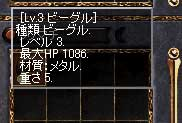

2003年2月16日
狗隻也洗血！？
來源：Lineage Reporter's Club

日本伺服器出現了等級3但有1086血的小臘犬！由此可見狗隻是沒有1000HP的上限（注：玩家角色的HP上限是1000）。究竟牠的主人是用怎樣的方法幫他洗血呢？有關方法並不是單純的升降等級，可能涉及遊戲中的Bug及設定漏洞，由此本網不便描述，而目前在日本及香港伺服器上已經不能再用此方法洗血了。（台灣伺服器可能仍然可以使用）
Copyright(C)1998-2003 Gabriel Leung. All Right Reserved.